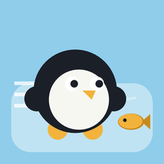
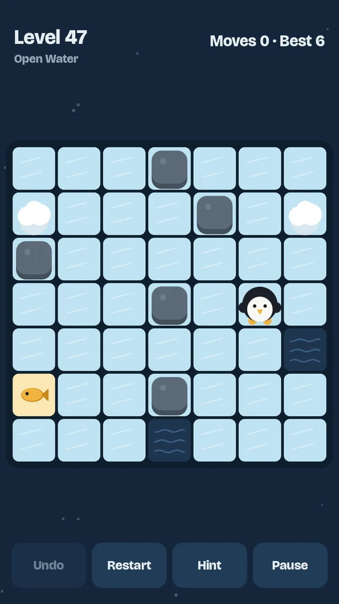
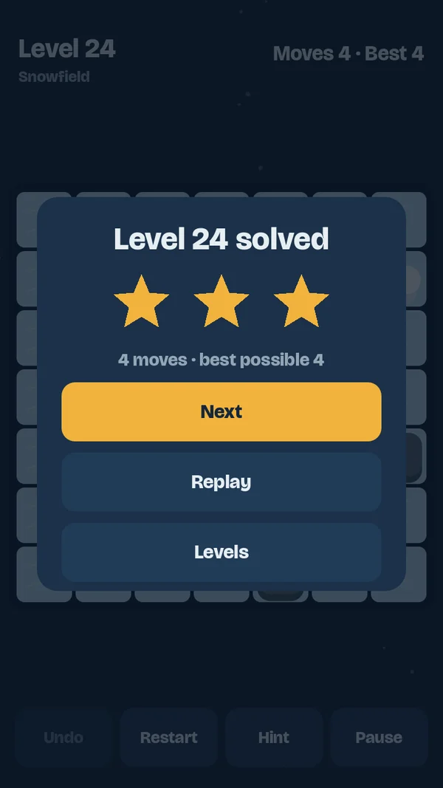
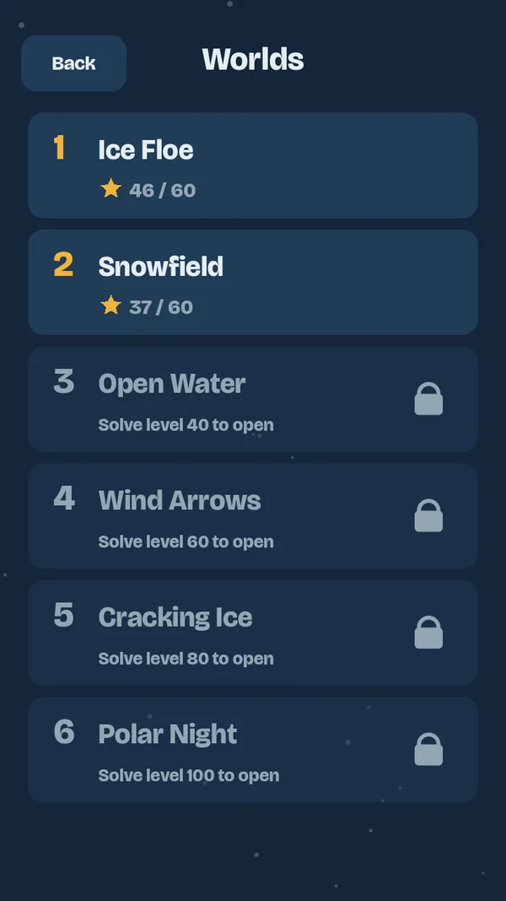

Slippery PawsPENGUIN SLIDING PUZZLES
Hjelp en sulten pingvin fram til fisken over isen. Sveip for å gli – men når pingvinen først er i gang, stopper den ikke før den treffer en stein. Finn den korteste veien og få tre stjerner.
Help a hungry penguin reach its fish across the ice. Swipe to slide – but once it starts moving, it won't stop until it hits a rock. Find the shortest path and earn three stars.



245 gåter245 puzzles
Ti frosne verdener med snø, råk, vindpiler og sprukken is – større og vanskeligere for hver verden. Hvert nivå har en bevist korteste løsning.
Ten frozen worlds with snow, open water, wind arrows and cracking ice – bigger and harder in every world. Every level has a proven shortest solution.
Uendelig modusEndless mode
Nye brett uten slutt, laget på telefonen, som blir vanskeligere jo mer du spiller.
New boards without end, made on your phone, that get harder as you play.
Ingen stressNo stress
Ingen klokke og ingen reklame. Hint koster stjerner, som du får når du låser opp nivåer. Spillet virker uten nett.
No timers and no ads. Hints cost stars, which you earn by unlocking levels. Works offline.
For alleFor everyone
Ingen konto og ingen kjøp. Retningsknapper, fargeblind-symboler og redusert bevegelse. En kort reklame mellom nivåene innimellom.
No account and no purchases. Direction buttons, colour-blind symbols and reduce motion. A short ad between levels now and then.